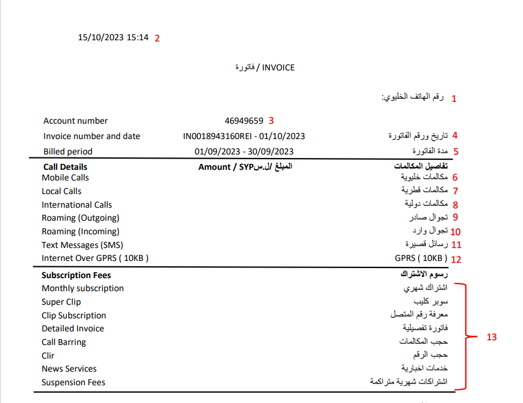
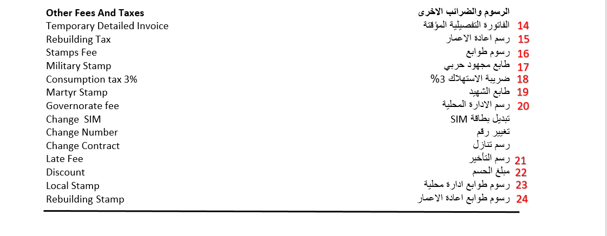
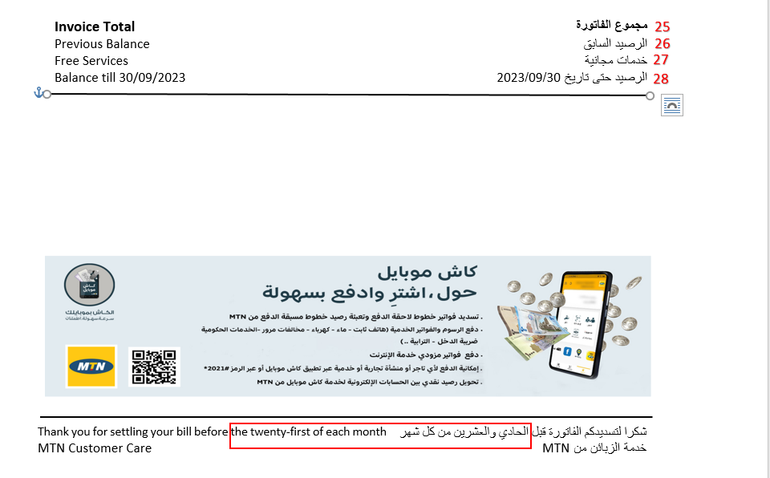
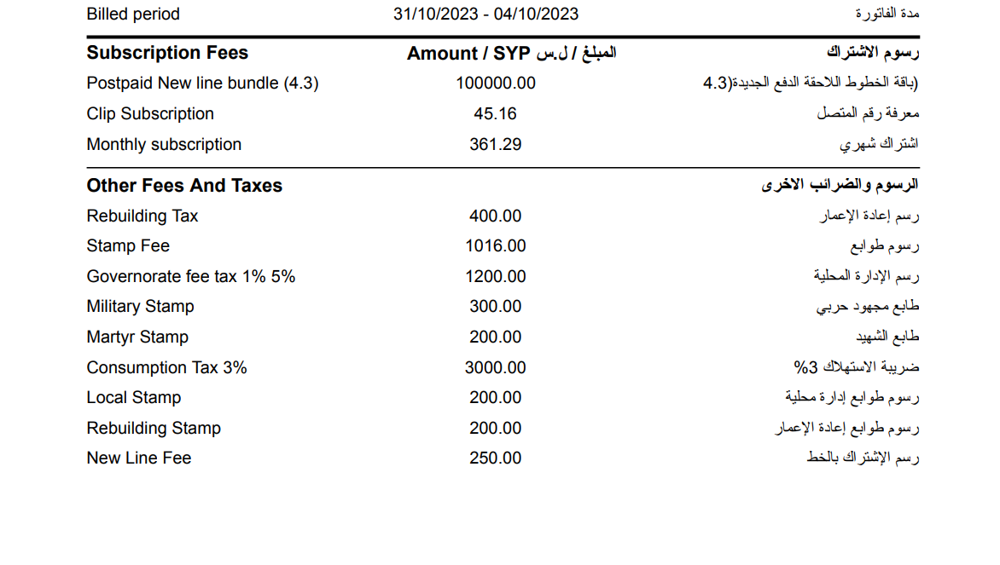
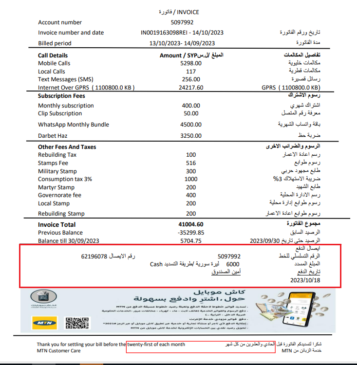

	<div class="entry-content clear" itemprop="text">

		
				<div data-elementor-type="wp-post" data-elementor-id="1041" class="elementor elementor-1041" data-elementor-settings="[]">
						<div class="elementor-inner">
							<div class="elementor-section-wrap">
							<section class="elementor-section elementor-top-section elementor-element elementor-element-94ab2fb elementor-section-boxed elementor-section-height-default elementor-section-height-default" data-id="94ab2fb" data-element_type="section">
						<div class="elementor-container elementor-column-gap-default">
							<div class="elementor-row">
					<div class="elementor-column elementor-col-100 elementor-top-column elementor-element elementor-element-654fabe" data-id="654fabe" data-element_type="column">
			<div class="elementor-column-wrap elementor-element-populated">
							<div class="elementor-widget-wrap">
						<div class="elementor-element elementor-element-61060e55 elementor-widget elementor-widget-text-editor" data-id="61060e55" data-element_type="widget" data-widget_type="text-editor.default">
				<div class="elementor-widget-container">
								<div class="elementor-text-editor elementor-clearfix">
				<div style="direction: rtl;text-align: right"><h5 style="text-align: right"><strong><span style="color: #800000">وصف الخدمة</span><br></strong></h5><p style="text-align: right">يحصل المشترك <strong>عند الطلب</strong> لدى تسديد الفاتورة على كشف يتضمن تفاصيل الفاتورة مجمعة ببنود رئيسية.</p><p style="text-align: right"><strong>تكلفة الخدمة مجانية، علما أن </strong><strong>تكلفة طباعة الايصال المدمج (أيصال تسديد فاتورة + كشف فاتورة) هو بقيمة 1000 ل.س&nbsp;</strong></p><p>اي عند طباعتها عن طريق برنامج CRM&nbsp; &nbsp;هي مجانية اما من خلال برنامج ال AX&nbsp; &nbsp;تكون بتكلفة 1000 ليرة&nbsp;</p><table class=" alignright" style="direction: rtl" width="781"><tbody><tr><td><p><strong> المعلومات الأساسية المطلوب تزويدها للمشترك :</strong></p></td></tr><tr><td><p>– يجب حضور صاحب&nbsp; العلاقة شخصيا&nbsp;<br>– يمكن للمشترك الحصول على كشف الفاتورة بعد تسديدها</p><p>– &nbsp;يكون الكشف جاهز بعد اكتمال صدور الفاتورة بشكل كامل أي بعد 4 – 5 من موعد صدور الفاتورة مع امكانية الاستعلام عن طريق الرمز *101#</p></td></tr></tbody></table><h5 style="text-align: right"><span style="color: #800000"><strong> معلومات الخدمة :&nbsp;</strong></span></h5><p>
					</p><p><strong></strong></p><p><strong><br></strong></p><h5><span style="color: #800000"><strong>تفاصيل الكشف</strong><strong>:</strong></span></h5><p><strong>1.رقم الهاتف الخليوي</strong>: رقم المشترك الخليوي</p><p><strong>2.تاريخ و توقيت طباعة كشف الفاتورة</strong> .</p><p><strong>3.رقم الحساب</strong>: رقم حساب المشترك على برنامج &nbsp;Billing System</p><p><strong>4</strong><strong>.</strong><strong>تاريخ و رقم الفاتورة</strong>: موعد صدور الفاتورة و أرقام مرجعية للفاتورة للطباعة على Billing System</p><p><strong>5.مدة الفاتورة</strong>: فترة احتساب الفاتورة</p><p><strong>6.مكالمات خليوية</strong>: مجموع قيمة المكالمات الخليوية المحلية بما فيها الاتصال بأرقام رباعية و الرقم 101</p><p><strong>7.مكالمات قطرية</strong>: مجموع قيمة المكالمات المحلية على الشبكة الثابتة و مجموع قيمة المكالمات على الأرقام الثلاثية المأجورة مثل أرقامالطوارئ.</p><p><strong>8.مكالمات دولية</strong><strong>:</strong> مجموع قيمة المكالمات الدولية بما فيها لبنان</p><p><strong>9.تجوال صادر</strong>: مجموع قيمة المكالمات والرسائل القصيرة الصادرة في حالة التجوال + تكلفة الانترنت اثناء التجوال في حال وجوده&nbsp; مجموع قيمة رسم شبكة MTN في حالة التجوال الوارد والتي تعادل تعرفة الاتصال الخليوي ضمن سوريا&nbsp; + نسبة التجوال من هذه القيمة لكل دقيقة استقبال أثناء التجوال.</p><p><strong>10.تجوال وارد</strong>: مجموع قيمة مكالمات التجوال الوارد تبعاً لرسم الاتصال الدولي أي قيمة التجوال الوارد دون حساب رسم شبكة MTN</p><p><strong>11.رسائل قصيرة</strong>: مجموع قيمة الرسائل المحلية والدولية والموجهة للخدمات الرباعية والثلاثية أيضاً (ما عدا الرسائل المرسلة أثناء التجوال).</p><p><strong>12.</strong><strong>: GPRS</strong> مجموع الكيلوبايت التي تم تحميلها أو استخدامها أثناء استخدام&nbsp;الانترنت&nbsp;و قيمتها بالليرة السورية</p><p><strong>13</strong><strong>.</strong><strong>رسوم الاشتراك: </strong>&nbsp;مجموع قيمة الاشتراك الشهري بالشبكة بالإضافة للاشتراكات بالخدمات المفعلة على الخط مثال (سوبر كليب, فاتورة تفصيلية, خدمات اخبارية, اظهاررقم المتصل, حجب المكالمات&nbsp; …الخ) بالإضافة إلى اشتراكات الشهرية المتراكمة في حال كان الخط موقف بطريقة (Suspend )</p><p><strong>رسوم أخرى</strong><strong>: </strong>وتتضمن قيمة الفاتورة التفصيلية المؤقتة ورسوم الطوابع – ضريبة الاستهلاك – تبديل البطاقة – تغيير الرقم – رسم التنازل – رسم التأخير – رسم الإدارة المحلية – مبلغ الحسم – رسوم تأمين .</p><p><strong>14. الفاتورة التفصيلية المؤقتة : </strong>قيمة كشف الاتصالات والرسائل الصادرة بعد طلبها من مركز الخدمة .</p><p><strong>15.رسم اعادة الاعمار : </strong><strong>10% </strong><strong>من ضريبة الاستهلاك + 10% من طابع العقد ( ان وجد)</strong></p><p><strong>16.رسوم طوابع</strong>: <strong>(طابع مالي&nbsp; + 1 رسم مجلس محافظة + 15 رسم طابع السل</strong> <strong>)</strong></p><p>تعتمد قيمة الطابع المالي على قيمة الفاتورة كما يلي:</p><p>الوصولات على اختلاف أنواعها في حال لم يذكر فيها مبلغ معين تكون قيمة الطابع المالي 200 ل.س</p><p>طابع مالي قيمته صفر ل.س لفاتورة قيمتها 10,000 &nbsp;أو أقل</p><p>طابع مالي 500 ل.س لفاتورة قيمتها أكبر من 10,000 ل.س و حتى 100 الف ل.س</p><p>طابع مالي 1000 ل.س لفاتورة قيمتها أكبر من 100 الف و حتى 500 ألف ل.س</p><p>طابع مالي 2000 ل.س لفاتورة قيمتها تجاوزت ال 500 الف ل.س</p><p><strong>17.طابع مجهود حربي : </strong>يتم احتساب طابع المجهود الحربي بقيمة 300 ل.س على اي فاتورة قيمتها اكبر من صفر.</p><p><strong>18.ضريبة الاستهلاك: </strong>وهو بقيمة 3% على&nbsp;الاستهلاك&nbsp; حيث سيتم تقريب الناتج لأقرب 100 ل.س كما يلي:</p><p>قيمة المكالمات المحلية والدولية والخدمات الرباعية والثلاثية</p><p>قيمة الرسائل المحلية والدولية والخدمات الرباعية والثلاثية</p><p>الانترنت عبر GPRS</p><p>حصتنا من إيراد مكالمات التجوال الوارد</p><p>الباقات ( الرسائل ، الانترنت ، باقات كلام )</p><p>دقة وغنية</p><p><strong>ملاحظة </strong><strong>:</strong> <strong>&nbsp;</strong>لن يطبق ضريبة الاستهلاك على:</p><p>سعر الخط</p><p>رسوم التأخير</p><p>المكالمات والرسائل الصادرة خلال التجوال</p><p>الخدمات الإضافية مثل تغيير الرقم أو السيم أو التنازل….)</p><p>الرسوم الدورية (الاشتراك الشهري الاشتراك بالميزات)</p><p>رسوم الطوابع :</p><p>فاتورة قيمتها أقل من 10,000 ل.س تكون رسوم الطوابع&nbsp; بقيمة 16 ل.س (طابع مكافحة السل 15 ل.س +&nbsp; طابع رسم محافظة 1 ل.س) ويكون الطابع المالي بقيمة 0 ل.س.</p><p>فاتورة قيمتها أكبر من 10,000 ل.س و أقل من 100 ألف ل.س تكون رسوم الطوابع بقيمة 516 ل.س (طابع مكافحة السل 15 ل.س +&nbsp; طابع رسم محافظة 1 ل.س) ويكون الطابع المالي بقيمة 500 ل.س.</p><p>فاتورة قيمتها أكبر من 100 ألف ل.س و أقل من 500 ألف ل.س تكون رسوم الطوابع بقيمة 1016 ل.س (طابع مكافحة السل 15 ل.س +&nbsp; طابع رسم محافظة 1 ل.س) ويكون الطابع المالي بقيمة 1000 ل.س</p><p>فاتورة قيمتها أكبر من 500 ألف ل.س تكون رسوم الطوابع بقيمة 2016 ل.س ( طابع مكافحة السل 15 ل.س +&nbsp; طابع رسم محافظة 1 ل.س ) ويكون الطابع المالي بقيمة 2000 ل.س</p><p><strong>&nbsp;</strong><strong>خطوط سبيد</strong><strong> :</strong></p><p>يطبق رسم ضريبة الاستهلاك 3% لخطوط سبيدعلى قيمة الفئة المختارة + القيمة المستهلكة بعد انتهاء الفئة .</p><p><strong>19.طابع الشهيد</strong><strong> : </strong>يتم احتساب طابع الشهيد بقيمة 200 ل.س على اي فاتورة قيمتها اكبر من صفر.</p><p><strong>20.رسم الإدارة المحلية</strong>: تتألف من قسمين :</p><p><strong>أولا</strong><strong> :</strong> 1 % على جميع بنود كشف الفاتورة ماعدا :</p><p>رسوم الطوابع</p><p>ضريبة الاستهلاك</p><p>رسم التأخير</p><p>سعر الخط</p><p><strong>ثانيا</strong><strong>:</strong> 5% تطبق على :</p><p>الطابع المالي ( ضمن رسوم الطوابع )</p><p>المجهود الحربي</p><p>طابع العقد</p><p><strong>يقرب مجموع رسم الإدارة المحلية 5% على الطابع بإلى أقرب 100 ل.س</strong></p><p><strong>يقرب مجموع رسم الإدارة المحلية 1% إلى أقرب 100 ليرة</strong><strong>&nbsp;</strong></p><p><strong>&nbsp;</strong><strong>و سيتم جمع قيمة 1% و 5% من بعد التقريب في كشف الفاتورة ضمن بند رسم الإدارة المحلية</strong><strong> . </strong></p><p><strong>21.رسم التأخير</strong>: يحتسب في حال التأخر عن تسديد الفاتورة ويضاف إلى قيمة الفاتورة التي تليها وهي عبارة عن 200&nbsp;ليرة سورية + ( 9% من قيمة الفاتورة ضرب 1/12).إلا أنه في حال كان المبلغ 99 ل.س أو أقل لا يتم احتساب رسم تأخير. في حال التأخر عن تسديد فاتورتين متتاليتين يتم احتساب الفائدة فقط في الفاتورة التالية أي &nbsp;(9% &nbsp;من قيمة الإجمالي المستحق للدفع ضرب 1/12)</p><p><strong>22.مبلغ الحسم</strong><strong>:</strong> مجموع قيمة الحسومات المجراة على الفاتورة في حال وجودها. مثلاً قيمة حسم خطوط موظفي شركة….MTNالخ وهي غير مرتبطة بطلبات الحسم المجراة من قبل قسم الـ &nbsp;Back office.</p><p><strong>23</strong><strong>. </strong><strong>رسوم طوابع إعادة إعمار<br>24.رسوم طوابع إدارة محلية</strong><strong>:&nbsp;</strong></p><p><strong>&nbsp;</strong></p><table style="font-size: 16px" width="720"><tbody><tr><td width="144"><p><strong>نوع الخدمة : (تسديد الفواتير)</strong></p></td><td width="144"><p><strong>إعادة اعمار على رسم طابع مالي </strong></p></td><td width="144"><p><strong>رسم الإدارة المحلية 5 % على رسم طابع مالي </strong></p></td><td width="144"><p><strong>إعادة اعمار على&nbsp; رسم المجهود الحربي</strong></p></td><td width="144"><p><strong>رسم الإدارة المحلية 5% على رسم المجهود الحربي</strong></p></td></tr><tr><td width="144"><p><strong>من 00 و حتى 3000</strong></p></td><td width="144"><p><strong>&nbsp;–</strong></p></td><td width="144"><p><strong>–</strong><strong>&nbsp;</strong></p></td><td width="144"><p><strong>–</strong><strong>&nbsp;</strong></p></td><td width="144"><p><strong>–</strong><strong>&nbsp;</strong></p></td></tr><tr><td width="144"><p><strong>أكبر من 3000 و حتى 10,000</strong></p></td><td width="144"><p><strong>–</strong></p></td><td width="144"><p><strong>–</strong></p></td><td width="144"><p><strong>100</strong></p></td><td width="144"><p><strong>100</strong></p></td></tr><tr><td width="144"><p><strong>أكبر من 10,000 و حتى 100,000</strong></p></td><td width="144"><p><strong>100</strong></p></td><td width="144"><p><strong>100</strong></p></td><td width="144"><p><strong>100</strong></p></td><td width="144"><p><strong>100</strong></p></td></tr><tr><td width="144"><p><strong>أكبر من 100,000 و حتى 500,000</strong></p></td><td width="144"><p><strong>100</strong></p></td><td width="144"><p><strong>100</strong></p></td><td width="144"><p><strong>100</strong></p></td><td width="144"><p><strong>100</strong></p></td></tr><tr><td width="144"><p><strong>أكبر من 500,000</strong></p></td><td width="144"><p><strong>200</strong></p></td><td width="144"><p><strong>100</strong></p></td><td width="144"><p><strong>100</strong></p></td><td width="144"><p><strong>100</strong></p></td></tr></tbody></table><p><strong>مثال :&nbsp;</strong></p><p>إجمالي الفاتورة 107.172 ل.س سيتم تطبيق رسوم طوابع إعادة إعمار و سوم طوابع إدارة محلية</p><p>( إعادة إعمار على المجهود الحربي 100 ل.س + إعادة إعمار على رسم الطابع المالي 100 ل.س) أي 100 + 100 = 200 ل.س <strong>رسوم إعادة إعما</strong>ر</p><p>( إعادة إدارة محلية 5% على المجهود الحربي 100 ل.س + إدارة محلية 5% على رسم الطابع المالي 100 ل.س) أي 100 + 100 = 200 ل.س <strong>رسوم إدارة محلية</strong></p><p><strong>25.مجموع الفاتورة</strong>: مجموع بنود الفاتورة الحالية من تفصيل المكالمات ,الاشتراكات الدورية و رسوم اخرى .</p><p><strong>26.الرصيد&nbsp;&nbsp;السابق</strong>: وهو حساب المشترك قبل صدور الفاتورة (قد يكون مبلغ متوجب الدفع أو مبلغ إضافي موجود في الحساب).</p><p><strong>27.خدمات مجانية</strong><strong>:&nbsp;&nbsp; </strong>خدمات مقدمة من الشركة الى المشترك مجانا .</p><p><strong>28. الفاتورة التفصيلية:</strong>&nbsp;تسلم حصرا للشخص المعني بها بناءً على رقمه الوطني&nbsp;</p><p><strong>29.الرصيد حتى تاريخ</strong><strong> : </strong>المبلغ المستحق حتى تاريخ صدور آخر فاتورة ( لا يتغير عند سداد دفعات من قيمة الفاتورة ).</p><p><strong>فيما يلي مثال عملي يوضح كيفية احتساب ضريبة رسم الإدارة المحلية و ضريبة الاستهلاك و اعادة الاعمار&nbsp; في كشف الفاتورة أدناه :</strong><br></p><p><strong><u>رسم الادارة المحلية:</u></strong></p><p><strong>1% من جميع بنود الفاتورة ماعدا الرسوم و الضرائب الاخرى + 5% من الطابع المالي و المجهود الحربي</strong></p><p>حساب ضريبة 1%</p><p>100.000+45.16+361.29+400+300+200*1/100 = 1013 تقرب لأقرب مئة&nbsp; لتصبح 1100 ل.س</p><p>حساب ضريبة 5%</p><p>300+1000*5/100 = 65 تقرب لأقرب مئة لتصبح 100 ل.س</p><p>حساب رسم الادارة المحلية : 1100 + 100 = 1200 ل.س</p><p><strong><u>رسم اعادة الاعمار:</u></strong></p><p><strong>10% من ضريبة الاستهلاك + 10% من طابع العقد</strong></p><p>حساب 10% من ضريبة الاستهلاك</p><p>3000*10/100 = 300&nbsp; ل.س</p><p>حساب 10% من طابع العقد</p><p>250*10/100 = 25 ل.س (تقرب لأقرب 100 أي يصبح 100 ل.س)</p><p>حساب رسم اعادة الاعمار : 300+100= 400 ل.س</p><p><strong><u>ضريبة الاستهلاك:</u></strong></p><p><strong>3% من مجموع بنود تفاصيل المكالمات و الباقات و </strong><strong>RBT</strong></p><p>100.000 *3/100 = 3000تقرب لأقرب مئة أي 3000 ل.س</p><p><strong>شرح شروط تطبيق الضرائب و الرسوم و المجهود الحربي في الحالات التالية</strong><strong>:</strong></p><ul><li>في حال وجد حسم على الفاتورة : مثل خطوط الـ Staff line):)</li><li>يتم تطبيق جميع الضرائب و الرسوم و المجهود الحربي قبل حسم مبلغ الـ Promotion الموجود على الفاتورة في حال وجود خدمات مجانية و هدايا الدفع الالكتروني التي تعطى للمشترك بشكل مجاني :</li><li>يتم حسم قيمة الاشتراك بالخدمات المجانية و من ثم يتم تطبيق الضرائب و الرسوم و طابع المجهود الحربي</li></ul><p><strong>ملاحظة1&nbsp; </strong>: توجد&nbsp;خطوط&nbsp; تبدأ بالرقم 095637 و0947537&nbsp;تابعة للمؤسسة العامة للاتصالات&nbsp; يطبق عليها نظام خاص باحتساب الفاتورة: يسدد المشترك قيمة المكالمات فقط أما قيمة الاشتراك الشهري مع خدمة إظهار الرقم&nbsp; 450 ل.س تسدد من قبل المؤسسة العامة للاتصالات.</p><p>مع العلم أن:</p><ul><li>هذه الأرقام من فئة STE على الـ Billing System</li><li>هذه الخطوط من فئة التسديد Q1</li><li>تظهر قيمة الفاتورة الصحيحة المستحقة للدفع على Billing System بتاريخ &nbsp;10من كل شهر(أي بعد خصم 450 ل.س).</li></ul><p><strong>ملاحظة2: </strong>يصبح الكشف جاهزاً للطباعة بعد 5 أيام من تاريخ صدور الفاتورة كالتالي:</p><table width="77%"><tbody><tr><td width="8%"><p>Q</p></td><td width="38%"><p>دورة الفاتورة</p></td><td width="52%"><p>استلام الكشف</p></td></tr><tr><td width="8%"><p>Q1</p></td><td width="38%"><p>1——30/31</p></td><td width="52%"><p>6</p></td></tr><tr><td width="8%"><p>Q2</p></td><td width="38%"><p>7——6</p></td><td width="52%"><p>12</p></td></tr><tr><td width="8%"><p>Q3</p></td><td width="38%"><p>14—–13</p></td><td width="52%"><p>19</p></td></tr><tr><td width="8%"><p>Q4</p></td><td width="38%"><p>21—–20</p></td><td width="52%"><p>26</p></td></tr></tbody></table><ul><li>في حال عدم إعطاء المشترك إيصال الدفع الأساسي ( Original) من الممكن طباعة إيصال آخر ( Duplicate ) و يتم ختمه و توقيعه من قبل مشرف المركز .</li></ul><p>و يتم كتابة العبارة التالية على الإيصال الآخر :</p><p>باللغة الانكليزية: &nbsp;Recognized as Original Receipt</p><p>أو بالعربية : نسخة إيصال الدفع المعتمدة .</p><ul><li>لا يمكن طباعة نسخة ثانية ( Duplicate ) من أي إيصال (عادي أو شركات) إلا عن طريق المسؤول المالي أو مسؤول المركز.</li><li>لا يمكن طباعة نسخة ثانية ( Duplicate ) من إيصال تسديد فاتورة الخط اللاحق الدفع في حال لم يكن المشترك قد طلبها قبل تسديد الفاتورة و قام الموظف بوضع إشارة الطباعة أثناء التسديد ليتم فوترة قيمة طباعة الإيصال, علما أنه في حال لم يتم وضع إشارة الطباعة أثناء التسديد لن تتم فوترة قيمة طباعة الإيصال عند طباعة نسخة ثانية لاحقا.</li><li>&nbsp;لا يوجد قيمة لطباعة إيصال تسديد فواتير الشركات عن تسديدها بطريقة Bulk, و لكن يتم فوترة قيمة طباعة لكل إيصال بحال تسديدها كل إيصال على حدة.</li></ul><ul><li><h5><strong><span style="color: #800000">معلومات حول الإعلانات الموجودة في كشف الفاتورة :</span> </strong></h5></li></ul><p>تم إطلاق حملة إعلانية جديدة تتضمن الإعلان عن خدمات شركة MTN على صفحة كشف الفاتورة الخاص بمشتركي الخطوط اللاحقة الدفع</p><ul><li>لا توجد مهلة محددة للمادة الإعلانية التي ستظهر في صفحة الكشف .</li><li>نوع المادة المعلنة هو من تخصص قسم التسويق الذي سيكون بالتالي المسؤول عن صحة هذه المعلومات .</li><li>ستكون الصورة متوفرة على جميع الكشوف التي تطبع عن طريق برنامج CRM في مراكز خدمة MTN و مراكز الوكلاء</li></ul><h5 style="direction: rtl"><strong><span style="color: #800000">كشف الفاتورة يتضمن ايصال الدفع كما هو موضح أدناه</span><br></strong></h5><p></p><ul><li>&nbsp; &nbsp; &nbsp;يتم طباعة الكشف الجديد لدى تسديد المشترك الفاتورة أو دفعة على الحساب ( في حال تسديد دفعة على الحساب تتم طباعة أخر كشف فاتورة صادر)</li><li>&nbsp; &nbsp; في حال تم تسديد مبلغ تأمين لا يتم طباعة الكشف و إنما يتم&nbsp; تزويد المشترك بإيصال الدفع فقط</li></ul><p></p></div>					</div>
						</div>
				</div>
						</div>
					</div>
		</div>
								</div>
					</div>
		</section>
						</div>
						</div>
					</div>
		
		
		
			</div><!-- .entry-content .clear -->
</div>